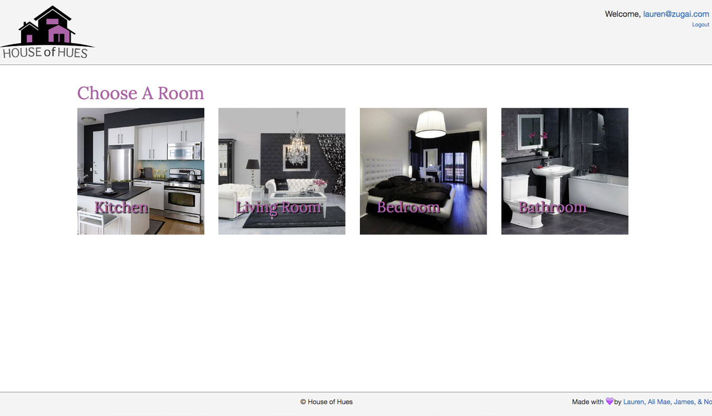
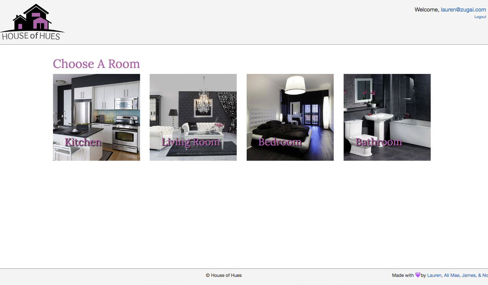

Dragon Duel is a game that was developed for my final project in General Assembly’s boot camp. While I plan to develop this game further in the future, only 2 levels have been built so far. This project was so much fun to work on & I'd like to work with web sockets again!
Created with: Node.JS/Express.JS/EJS, Passport authentication middleware, MongoDB/Mongoose ODM, AJAX, JSON from API endpoints, Socket.IO, JavaScript/jQuery, SASS/CSS (mixins galore), & Photoshop/very heavy vector graphic manipulation
jQuery plugins: Avgrund.JS (for login/sign up modals)
Future featured code snippets: SASS/EJS code for user profiles, Socket.IO code for battlefield
The main page displays both the user's dragon at the highest level and the team they are on (dark team for the win!). The castle's roofing, sky, and subtle background all correspond with the winning user's team.
The document on the right displays the schema linked to user account creation.
Upon deciding to join the cause (how noble of them), users fill out a form that goes into the database to perform client-side validation. The e-mail and username must be unique, and the passwords must be both 8+ characters and match before the next section can be seen.
Users then select choices to a fun 5-question quiz to determine what team they will be on before the form is submitted. The team (light or dark) depends on the answers, but the power given (between 3 per team) is randomly chosen.
Pictured is what a user’s profile looks like if the user is on level 1. The castle rooftops, sky, subtle background, and dragon facing direction is dependent upon the user’s team, and the user’s avatar is dependent upon both user's gender and dragon’s power. Users always match their dragon's power!
All dragons are named Drogon, but users will be able to change this in the future.
Pictured is what a user’s profile looks like if the user is on level 2 (the current highest level). The castle rooftops, windows/flag, cloud, sky, subtle background, and dragon facing direction is dependent upon the user’s team, and like level 1, the user’s avatar is dependent upon both the user’s gender and dragon’s power. If you are on this level, your avatar gets a crown. 😁
This castle will only be given to the one “top" user in the future.
Users may only choose to leave the battlefield if they are on level 1. There is a dragon with a power type on the opposing team that the user is stronger than, weaker than, and tied to. Using Socket.IO, players in the battlefield are updated real-time to wins, losses, and ties.
The screenshot: @Test, on the light team and logged in on the left-hand side, is in the battlefield on level 1. @LZoog, logged in on the bottom-right corner, is in the battlefield on level 2. @Jeremy, on the dark team and logged on in the upper right-hand corner, enters the battlefield.
@Test leaves and re-enters the battlefield. Since @Test has the power of fire which is stronger than @Jeremy’s power of darkness, @Test clicks on him and wins, kicking @Jeremy out of the battlefield since they were on level 1 and @Test moves up to level 2. @LZoog can see @Test enter the level.
When a user clicks on a dragon with a power type on the opposing team that is equal to their own, they tie, and are both moved down a level or kicked out if they were on level 1. When a user clicks on a dragon with a power stronger, the user is moved down a level or kicked out if on level 1, and the opposing user remains on the same level, unaware they were even attacked (gasp).
The screenshot: @Test, with the power of fire, is logged in on the left-hand side and @Jason, with the power of ice, is logged in on the right-hand side. @Test clicks on @Jason and they are both kicked out of the battlefield. Then, a browser with @Antonia logged in on is clicked on, and she enters the battlefield. @Antonia's power of psychic is stronger than @Test's power of fire. @Test then re-enters the battlefield and clicks on @Antonia, kicking himself out, but leaving Antonia in place.


 unicorn: a full-stack developer with front-end focus & a great eye for design. {what a mouthful}
unicorn: a full-stack developer with front-end focus & a great eye for design. {what a mouthful}
 


 MagicJays (Front-End Site)
MagicJays (Front-End Site)